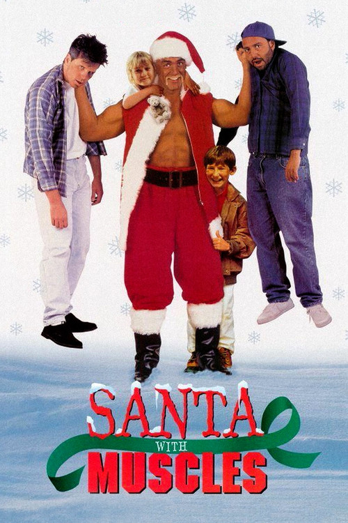
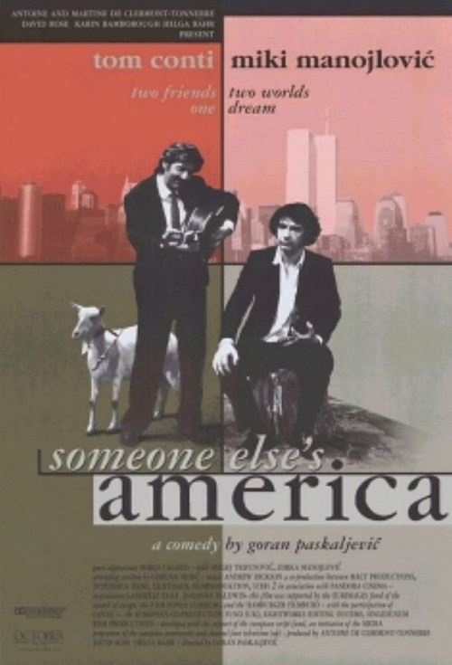
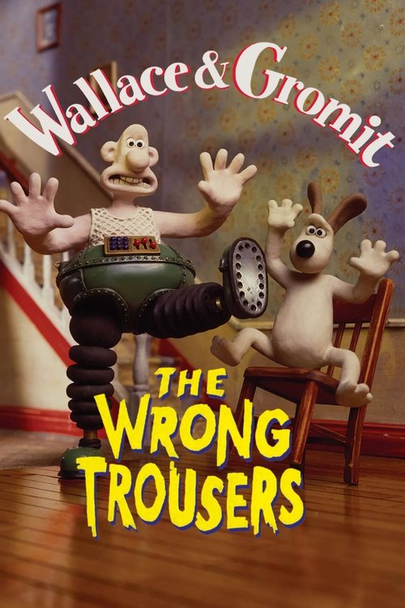
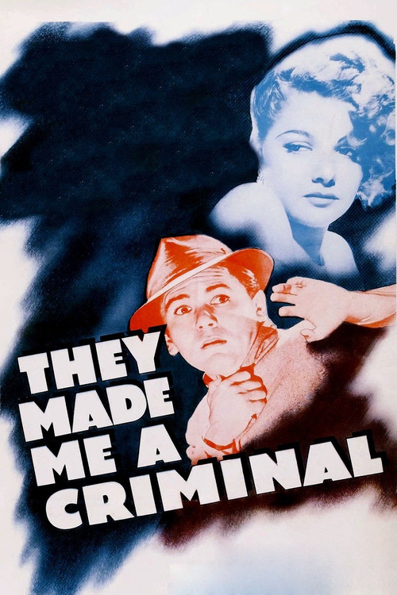
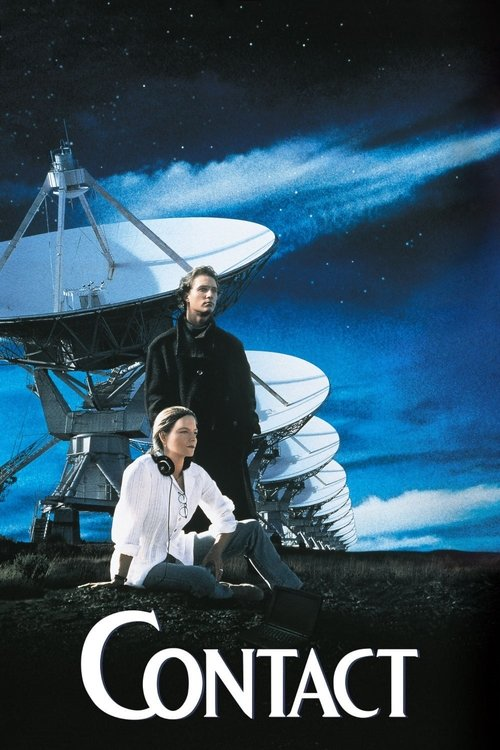
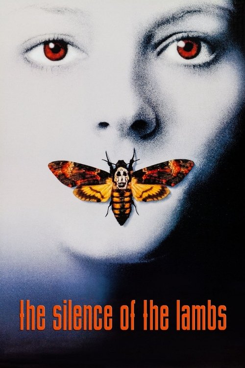

#1

A heartless millionaire believes he is Santa Claus after an accident renders him amnesiac.
Yomon Emas! Good!
Berilgan reytinglar va qisqa tavsiflar ro‘yxati.

A heartless millionaire believes he is Santa Claus after an accident renders him amnesiac.
When Russian neo-nationalists hijack Air Force One, the world's most secure and extraordinary aircraft, the President is faced with a nearly impossible decisio…
Matthew, a young schizophrenic, finds himself out on the street when a slumlord tears down his apartment building. Soon, he finds himself in even more dire str…

This tale takes place in a bar. The Spanish Alonso and his blind mother run this place. Bay, who is Alonso's friend live here too. This story tells something a…

Wallace rents out Gromit's former bedroom to a penguin, who takes up an interest in the techno trousers created by Wallace. However, Gromit later learns that t…

A boxer flees, believing he has committed a murder while he was drunk.

Held in an L.A. interrogation room, Verbal Kint attempts to convince the feds that a mythic crime lord, Keyser Soze, not only exists, but was also responsible …

A radio astronomer receives the first extraterrestrial radio signal ever picked up on Earth. As the world powers scramble to decipher the message and decide up…

Clarice Starling is a top student at the FBI's training academy. Jack Crawford wants Clarice to interview Dr. Hannibal Lecter, a brilliant psychiatrist who is…
Imprisoned in the 1940s for the double murder of his wife and her lover, upstanding banker Andy Dufresne begins a new life at the Shawshank prison, where he pu…